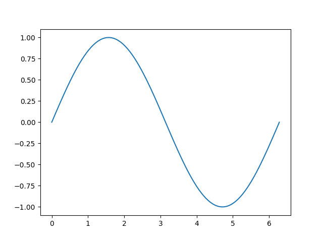
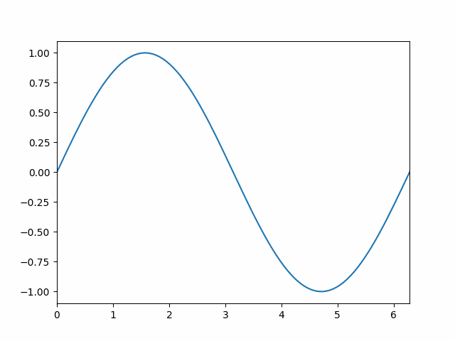
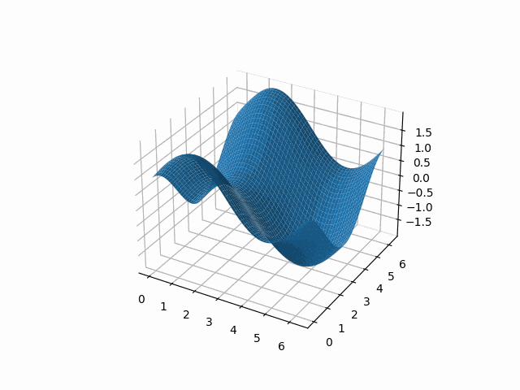
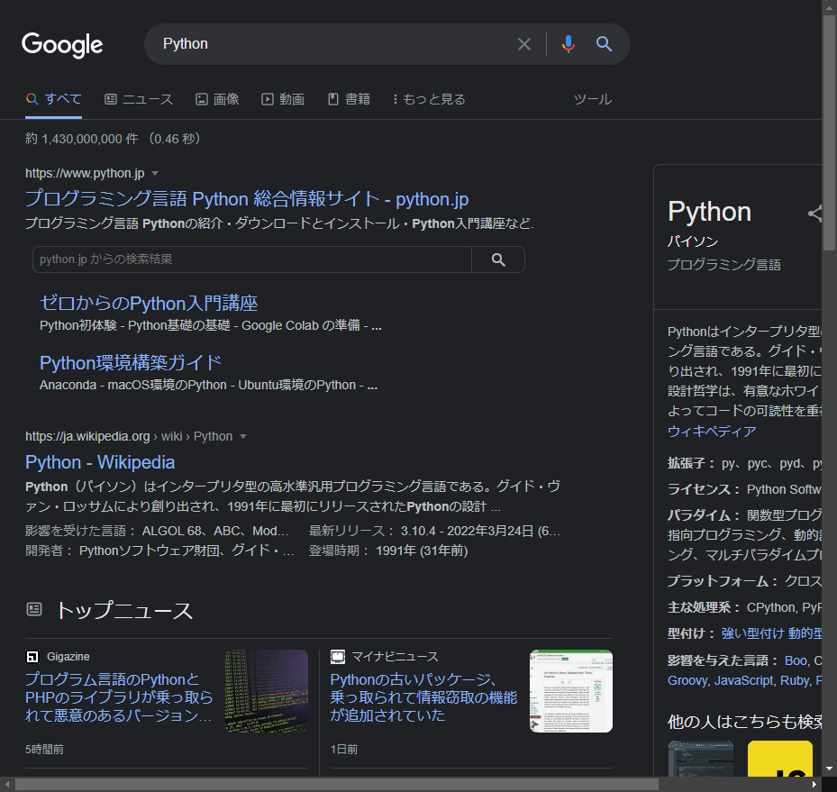

プログラムを再利用可能とする仕組みとして「モジュール」というものがある。
Pythonではファイルがそのままモジュールとなる仕組みになっている。
module.pyというファイルを作れば、それはmoduleという名前のモジュールになり、import moduleとインポートすることで別のファイルでmodule.pyで定義した関数などを使用することができる。
いくつかのモジュールを一つのディレクトリに集めたものを「パッケージ」という。
Pythonではディレクトリに__init__.pyというファイルを作成することで、そのディレクトリをパッケージ化することができる。
パッケージをさらに集めてパッケージ化することもできる。
標準ライブラリの一つであるrandomモジュールとmathモジュールを使用して、ランダムウォークをシミュレーションしてみよう。
モジュールを使用するには、import モジュール名と記述する。
モジュールの関数を呼び出すにはモジュール名.関数名()と記述する。
import random
import math
def random_walk(x=0, y=0, d=1, step=100):
for _ in range(step):
theta = 2 * math.pi * random.random()
x += d * math.cos(theta)
y += d * math.sin(theta)
return x, y
if __name__ == "__main__":
results = [random_walk() for _ in range(100)]
distances = [math.hypot(x, y) for (x, y) in results]
avg = sum(distances) / len(distances)
print("Average:", avg)
ソースコードはrandom_walk.pyにある。
$ python random_walk.py
Average: 9.349949550243096
Pythonは高級な操作を簡単に実現できるように、多くの標準ライブラリが実装されている。
全ての標準ライブラリはここで確認することができる。
その中で、よく使用するライブラリを挙げておく。
正規表現を扱うためのモジュール。
>>> import re
>>> pattern = r"hello, (?=\w+)"
>>> re.match(pattern, "hello, world")
<re.Match object; span=(0, 7), match='hello, '> # マッチする
>>> re.match(pattern, "hello, ???") # マッチしない
数学関数を集めたモジュール。
>>> import math
>>> math.pi # 円周率
3.141592653589793
>>> math.floor(math.pi) # 床関数
3
>>> math.ceil(math.pi) # 天井関数
4
>>> math.lcm(3, 4) # 最小公倍数
12
>>> math.gcd(8, 12) # 最大公約数
4
>>> math.exp(1) # 指数関数
2.718281828459045
>>> math.log(1) # 対数関数
0.0
数理統計関数を集めたモジュール。
>>> import statistics
>>> data = [3, 4, 7, 7, 9, 3, 5, 3]
>>> statistics.mean(data) # 平均値
5.125
>>> statistics.median(data) # 中央値
4.5
>>> statistics.mode(data) # モード
3
>>> statistics.stdev(data) # 標本標準偏差
2.295181287579947
様々なイテレータを構築する関数を集めたモジュール。
>>> import itertools
>>> list(itertools.accumulate([1, 2, 3, 4, 5])) # 累積和
[1, 3, 6, 10, 15]
>>> list(itertools.chain("ABC", "DEF")) # 連鎖
['A', 'B', 'C', 'D', 'E', 'F']
>>> list(itertools.product([1, 2, 3], [4, 5])) # デカルト積
[(1, 4), (1, 5), (2, 4), (2, 5), (3, 4), (3, 5)]
>>> list(itertools.permutations([1, 3, 5], 2)) # 順列
[(1, 3), (1, 5), (3, 1), (3, 5), (5, 1), (5, 3)]
>>> list(itertools.combinations([1, 3, 5], 2)) # 組み合わせ
[(1, 3), (1, 5), (3, 5)]
高級なパス操作を行うためのモジュール。
>>> import pathlib
>>> path = pathlib.Path(".") # Pathオブジェクトの作成
>>> file = path / "monty.py" # パスの連結
>>> file.exists() # パスの存在判定
False
>>> # .pyファイルのみをリスト化
>>> [file.name for file in path.iterdir() if file.suffix == ".py"]
['random_walk.py']
>>> [file.name for file in path.glob("*.py")]
['random_walk.py']
他にもパス展開やファイル・ディレクトリの作成・削除などの便利なメソッドがある。
一時ファイルや一時ディレクトリを安全に作成するためのモジュール。
高級なファイル操作を行う関数を集めたモジュール。
OS依存の機能を利用するためのモジュール。
>>> import os
>>> os.name
'nt'
>>> os.getpid()
31332
JSONテキストとPythonオブジェクトを繋ぐモジュール。
>>> import json
>>> alice = {"name": "Alice", "age": 20}
>>> bob = {"name": "Bob", "age": 22}
>>> data = {"person": [alice, bob]}
>>> json.dumps(data)
'{"person": [{"name": "Alice", "age": 20}, {"name": "Bob", "age": 22}]}'
>>> json.loads('{"name": "Charlie", "age": 25}')
{'name': 'Charlie', 'age': 25}
並列タスクを実現するためのモジュール。
>>> import concurrent.futures as cf
>>> def task(i):
... time.sleep(i)
... return i
...
>>> with cf.ThreadPoolExecutor(max_workers=4) as executor: # マルチスレッドで処理する
... futures = [executor.submit(task, i) for i in range(10)]
... results = [future.result() for future in cf.as_completed(futures)]
...
>>> print(results)
[0, 2, 1, 3, 6, 5, 4, 7, 9, 8] # 結果は一意ではない
Pythonのパッケージはユーザが自由に開発することができて、その多くはPyPI(Python Package Index)で公開されている。
このセクションではPyPIからサードパーティライブラリをインストール・管理する方法を学ぶ。
PyPIからパッケージをインストールするにはpipというツールが必要である。
pipは通常Pythonをインストールしたときに一緒にインストールされる。
初めにpipのバージョンを確認する。
$ pip --version
# または
$ python -m pip --version
次にpipを最新版へ更新する。
$ pip install --upgrade pip
パッケージをインストールするにはpip install パッケージ名を実行する。
試しにHTTPリクエストを送るためのパッケージrequestsをインストールしてみる。
$ pip install requests
現在インストール済みのパッケージを確認する。
$ pip list
パッケージの詳細を確認する。
$ pip show requests
パッケージをアンインストールする。
$ pip uninstall requests
requirements.txtファイルから一括インストールする。
$ pip install -r requirements.txt
バージョンを指定してインストールする。
$ pip install requests==2.27.1
知っておいたほうがよいサードパティライブラリをいくつか紹介する。
ベクトルや行列といった、より高度な数学概念を実装したライブラリ。
中身はBLASで実装されているため、非常に高速に動作し、メモリ効率も良い。
$ pip install numpy
>>> import numpy as np
>>> x = np.array([1, 2, 5, 10]) # 配列を作成 (ベクトルに対応)
>>> 2 * x # スカラー演算はブロードキャストされる
array([ 2, 4, 10, 20])
>>> x + 2
array([ 3, 4, 7, 12])
>>> np.exp(x) # numpy関数もブロードキャストされる
array([2.71828183e+00, 7.38905610e+00, 1.48413159e+02, 2.20264658e+04])
>>> y = 2 * x
>>> x @ y # ドット積
260
>>> x * y # 要素積
array([ 2, 8, 50, 200])
>>> np.cross([1, 0, 0], [0, 1, 0]) # クロス積
array([0, 0, 1])
メジャーなグラフ描画ライブラリ。
2003年発の歴史あるライブラリなので、ノウハウをインターネット上で見つけやすい。
$ pip install matplotlib
>>> import numpy as np
>>> import matplotlib.pyplot as plt
>>> x = np.linspace(0, 2, 100) * np.pi
>>> y = np.sin(x)
>>> fig, ax = plt.subplots()
>>> ax.plot(x, y) # プロット
[<matplotlib.lines.Line2D object at 0x0000022A953456C0>]
>>> fig.show() # グラフを表示
>>> fig.savefig("sin.png") # 画像として保存

GIF画像も作れる。
>>> import matplotlib.animation as anime
>>> fig, ax = plt.subplots()
>>> x = np.linspace(0, 2, 200) * np.pi
>>> t = x
>>> ax.set_xlim(x[0], x[-1])
(0.0, 6.283185307179586)
>>> images = list(map(lambda t: ax.plot(x, np.sin(x - t), c="tab:blue"), t))
>>> animation = anime.ArtistAnimation(fig, images, interval=50)
>>> plt.show()
>>> animation.save("sin_wave.gif")

3Dもいける。
>>> import mpl_toolkits.mplot3d
>>> import numpy as np
>>> fig = plt.figure()
>>> ax = fig.add_subplot(111, projection="3d")
>>> t = np.linspace(0, 2, 50) * np.pi
>>> x, y = np.meshgrid(t, t)
>>> ax.set_xlim(t[0], t[-1])
(0.0, 6.283185307179586)
>>> ax.set_ylim(t[0], t[-1])
(0.0, 6.283185307179586)
>>> def update(frame):
... ax.clear()
... return ax.plot_surface(x, y, np.sin(x-frame) + np.cos(y-frame))
...
>>> animation = anime.FuncAnimation(fig, update, frames=t, interval=50)
>>> plt.show()
>>> animation.save("3d_wave.gif")

後発のグラフ描画ライブラリ。
WEB上で動くインタラクティブなグラフが特徴的で、データ分析アプリケーションのデファクトスタンダードになりつつある。
R, Julia, JavaScript, MATLABで動作するため、データサイエンティストをメインターゲットにしていることが伺える。
$ pip install plotly
>>> import plotly.express as px
>>> import numpy as np
>>> x = np.linspace(0, 2 * np.pi, 100)
>>> fig = px.line(x=x, y=np.sin(x))
>>> fig.show()
>>> fig.write_image("plotly_sin.png")
散布図を描く。
>>> df = px.data.iris()
>>> fig = px.scatter(df, x="sepal_length", y="sepal_width", color="species")
>>> fig.show()
>>> fig = px.scatter_3d(df, x="sepal_length", y="sepal_width", z="petal_width", color="species")
>>> fig.show()
データフレームライブラリ。
CSVやExcelのような表データを「データフレーム」として扱う。
主にデータ分析に用いる。
>>> import pandas as pd
>>> iris_csv = """https://gist.github.com/netj/8836201\
... /raw/6f9306ad21398ea43cba4f7d537619d0e07d5ae3/iris.csv"""
>>> df = pd.read_csv(iris_csv)
>>> df.head()
sepal.length sepal.width petal.length petal.width variety
0 5.1 3.5 1.4 0.2 Setosa
1 4.9 3.0 1.4 0.2 Setosa
2 4.7 3.2 1.3 0.2 Setosa
3 4.6 3.1 1.5 0.2 Setosa
4 5.0 3.6 1.4 0.2 Setosa
>>> df.describe()
sepal.length sepal.width petal.length petal.width
count 150.000000 150.000000 150.000000 150.000000
mean 5.843333 3.057333 3.758000 1.199333
std 0.828066 0.435866 1.765298 0.762238
min 4.300000 2.000000 1.000000 0.100000
25% 5.100000 2.800000 1.600000 0.300000
50% 5.800000 3.000000 4.350000 1.300000
75% 6.400000 3.300000 5.100000 1.800000
max 7.900000 4.400000 6.900000 2.500000
HTTP（Hyper Text Transfer Protocol)の人間向きインターフェースを実装したライブラリ。
HTTPには様々なメソッドが存在するが、我々がよく使用するのはGETメソッドとPOSTメソッドである。
See Also
$ pip intall requests
>>> import requests
>>> url = "https://google.com"
>>> response = requests.get(url) # GETメソッドを実行
>>> response.status_code # ステータスコードの取得
200
>>> response.raise_for_status() # 404 Not Found等で例外が送出される
>>> response.content # 取得したバイトデータ
# 省略
>>> response.text # 取得したテキストデータ
# 省略
HTML(Hyper Text Markup Language)を解析するライブラリ。
HTMLテキストから任意の情報を簡単に抽出することができる。
ブラウザでリンクとして表示されているのは<a>タグ要素である。
See Also
$ pip install beautifulsoup4
>>> import bs4
>>> import requests
>>> url = "https://google.com"
>>> response = requests.get(url)
>>> soup = bs4.BeautifulSoup(response.content, "html.parser")
>>> tag = soup.find("a") # <a>タグを検索
>>> tag
<a class="gb1" href="https://www.google.co.jp/imghp?hl=ja&tab=wi">画像</a>
>>> tag.text # タグのテキストを取得
'画像'
>>> tag.get("href") # タグの属性を取得
'https://www.google.co.jp/imghp?hl=ja&tab=wi'
>>> for tag in soup.find_all("a"): # <a>タグを全て検索
... print(tag)
...
<a class="gb1" href="https://www.google.co.jp/imghp?hl=ja&tab=wi">画像</a>
<a class="gb1" href="https://maps.google.co.jp/maps?hl=ja&tab=wl">マップ</a>
<a class="gb1" href="https://play.google.com/?hl=ja&tab=w8">Play</a>
<a class="gb1" href="https://www.youtube.com/?gl=JP&tab=w1">YouTube</a>
<a class="gb1" href="https://news.google.com/?tab=wn">ニュース</a>
<a class="gb1" href="https://mail.google.com/mail/?tab=wm">Gmail</a>
<a class="gb1" href="https://drive.google.com/?tab=wo">ドライブ</a>
<a class="gb1" href="https://www.google.co.jp/intl/ja/about/products?tab=wh" style="text-decoration:none"><u>もっと見る</u> »</a>
<a class="gb4" href="http://www.google.co.jp/history/optout?hl=ja">ウェブ履歴</a>
<a class="gb4" href="/preferences?hl=ja">設定</a>
<a class="gb4" href="https://accounts.google.com/ServiceLogin?hl=ja&passive=true&continue=https://www.google.com/&ec=GAZAAQ" id="gb_70" target="_top">ログイン</a>
<a href="/advanced_search?hl=ja&authuser=0">検索オプション</a>
<a href="http://www.google.co.jp/intl/ja/services/">ビジネス ソリューション</a>
<a href="/intl/ja/about.html">Google について</a>
<a href="https://www.google.com/setprefdomain?prefdom=JP&prev=https://www.google.co.jp/&sig=K_FkxzWFTT-3CO0HCQCDUYHqsaspo%3D">Google.co.jp</a>
<a href="/intl/ja/policies/privacy/">プライバシー</a>
<a href="/intl/ja/policies/terms/">規約</a>
ブラウザを操作するためのライブラリ。
元々はブラウザテストを自動化するためにJavaで実装されたライブラリである。
使いこなせればブラウザ作業は全てプログラムで自動化できるようになる。
以下ではGoogle Chrome/Chromiumブラウザを操作する例を示す。
$ pip install selenium chromedriver-binary-auto
Googleで「Python」と検索してスクリーンショットを保存する。
>>> import selenium.webdriver as wd
>>> from selenium.webdriver.common.by import By
>>> from selenium.webdriver.common.keys import Keys
>>> import chromedriver_binary
>>> options = wd.ChromeOptions()
>>> driver = wd.Chrome(options=options)
>>> search_box = driver.find_element(By.NAME, "q")
>>> search_box.send_keys("Python")
>>> search_box.send_keys(Keys.RETURN)
>>> driver.save_screenshot("selenium.png")
True
>>> driver.quit() # 終了するときは必ず呼び出す（メモリリークの原因になる）

ExcelファイルをPythonで操作するためのライブラリ。
$ pip install openpyxl
ワークブックへの書き込み。
>>> import openpyxl
>>> wb = openpyxl.Workbook() # ワークブックを作成
>>> ws = wb.active # アクティブなシートを取得
>>> ws["A1"] = 42 # セルに値を入力
>>> ws.append([1, 2, 3]) # 行を追加
>>> ws.title = "Title here" # シートタイトルを更新
>>> ws2 = wb.create_sheet(title="Data") # 新しいシートを作成
>>> wb.save("openpyxl.xlsx") # ワークブックを保存
ワークブックの読み込み。
>>> # ワークブックのロード
>>> wb = openpyxl.load_workbook("openpyxl.xlsx")
>>> wb.sheetnames # シート名を取得
['Title here', 'Data']
>>> ws = wb["Title here"] # シートを取得
>>> ws["A1"].value # セルの値を取得
42
PowerPointファイルを作成・編集するためのライブラリ。
$ pip install python-pptx
>>> import pptx
>>> prs = pptx.Presentation() # プレゼンテーションを作成
>>> title_slide_layout = prs.slide_layouts[0] # レイアウトを取得
>>> slide = prs.slides.add_slide(title_slide_layout) # スライドを追加
>>> title = slide.shapes.title # タイトルボックスを取得
>>> subtitle = slide.placeholders[1] # サブタイトルボックスを取得
>>> title.text = "Hello, World!" # タイトルを更新
>>> subtitle.text = "python-pptx was here!" # サブタイトルを更新
>>> prs.save("python-pptx.pptx") # プレゼンテーションを保存
GUIを自動化するためのライブラリ。
マウス操作やキー入力操作を自動化できる。
$ pip install pyautogui
>>> import pyautogui
>>> pyautogui.position()
Point(x=1435, y=974)
>>> pyautogui.moveTo(100, 150) # マウスを絶対座標へ移動
>>> pyautogui.move(100, 300, duration=2) # 2秒かけてマウスを絶対座標へ移動
>>> pyautogui.move(100, 150) # マウスを相対座標へ移動
>>> pyautogui.click() # マウスをクリック
>>> pyautogui.doubleClick() # マウスをダブルクリック
>>> pyautogui.write("print('Hello')") # 文字を入力
>>> print('Hello')
Hello
>>> pyautogui.press("Win") # キーを入力
>>> pyautogui.hotkey("Win", "d") # ホットキーを入力
>>> with pyautogui.hold("shift"): # キーをホールド
... pyautogui.hotkey("Win", "s")
...
筆者が開発している研究室用のライブラリ。
現在(2022/05/26)はGitHubからのみインストール可能である。
$ pip install git+https://github.com/huisint/tlab
GoogleのAPIを使用する。 APIはWasedaアカウントでなければ使用できない。
>>> from tlab import google
>>> creds = google.Credentials.new() # 認証情報の取得
>>> api = google.GmailAPI(creds) # GmailAPIインスタンスの作成
>>> query = 'subject:("Laboratory Seminar Invitation")' # Gmailの検索ボックスと同じフォーマットのクエリ
>>> api.search_email(query) # メールを検索
# 省略
>>> gmail = api.get_email("180ff484260f064b") # メールを取得
>>> for header in gmail["payload"]["headers"]:
... if header["name"] == "Subject":
... print(header["value"])
...
Laboratory Seminar Invitation
より高度なアプリケーションのためのライブラリを挙げる。
画像処理ライブラリ。
$ pip install pillow
>>> from PIL import Image
>>> im = Image.open("images/sin.png") # 画像の読み込み
>>> im.show() # 画像の表示
>>> im.size # 画像サイズの取得
(640, 480)
>>> im.resize((320, 480)).show() # リサイズ
>>> im.rotate(90).show() # 回転
>>> im.save("pillow.png") # 保存
より高度な画像処理ライブラリ。
画像処理分野の研究成果が実装されている。
$ pip install opencv-python
コマンドラインインターフェース(CLI)を作るためのライブラリ。
標準ライブラリでもCLIを作ることはできるが、メンテナンス性が良いのでこのライブラリを使用することを推奨する。
$ pip install click
ウェブアプリケーションフレームワークライブラリ。
Pythonでウェブアプリケーションを作る場合にどれかにお世話になるだろう。
おすすめはFastAPIである。
$ pip install django
$ pip install flask
$ pip install fastapi
機械学習ライブラリ。
機械学習研究者の研究成果が詰め込まれている。
数年前の流行りのおかげで、ノウハウや書籍が充実している。 一応、機械学習の理論を知らなくても使えるように実装されているが、ニューラルネットワークの基礎的な理論は学習しておいたほうが良いかもしれない。
$ pip install tensorflow
$ pip install pytorch
データ分析に特化したウェブアプリケーションを作れるライブラリ。
簡単なAPIでモダンなウェブアプリを作ることができる。
$ pip install streamlit
紹介したライブラリを使用して自身のタスクを効率化する例を示す。
カレントディレクトリ以下に眠るPythonソースファイル.pyを検索して、そのパスをコンソール出力してみよう。
import pathlib
dirctory = pathlib.Path.cwd()
suffix = ".py"
for file in dirctory.glob(f"**/*{suffix}"):
print(file)
特定のキーワードをファイル名に含むファイルを検索して、一つのフォルダに集めてみよう。
import pathlib
import shutil
directory = pathlib.Path("//192.168.0.10/disk/references")
destination = pathlib.Path.cwd() / "dest"
keywords = ["In", "量子ドット"]
destination.mkdir(parents=True, exist_ok=True)
for file in directory.glob("**/*"):
if file.is_dir():
continue
if all((keyword in file.name) for keyword in keywords):
shutil.copy(file, destination)
zipアーカイブを作ってみよう。
import pathlib
import shutil
directory = pathlib.Path.cwd() / "data"
shutil.make_archive(directory.name, format="zip", root_dir=directory)
ウェブからデータを取得して任意のディレクトリに保存しよう。
HTMLテキストはもちろん、zipファイルや画像データといったバイナリも取得して保存できる。
import pathlib
import requests
savedir = pathlib.Path.cwd() / "webpages"
urls = []
savedir.mkdir(parents=True, exist_ok=True)
for url in urls:
response = requests.get(url)
response.raise_for_status()
filename = response.url.split("/")[-1]
with open(savedir / filename, mode="wb") as f:
f.write(response.content)
ウェブからHTMLテキストを取得して解析してみよう。 独自のスクリプトを作成する際はChromeのDevTools(f12)のElementタブが便利だ。
過去の応用物理学会講演会からキーワードに合致した講演タイトルを出力する。
import requests
import bs4
keywords = ["Ga", "量子ドット"]
url_base = "https://confit.atlas.jp"
programs = {
"2021年 第82回応用物理学会秋季学術講演会（オンライン）": url_base + "/guide/event/jsap2021a/class",
"2021年 第68回応用物理学会春季学術講演会（オンライン）": url_base + "/guide/event/jsap2021s/class",
}
headers = {"Accept-Language": "ja"}
for program, url in programs.items():
print(program)
response = requests.get(url, headers=headers)
response.raise_for_status()
soup = bs4.BeautifulSoup(response.content, "html.parser")
dl_tag = soup.find("dl", attrs={"class": "cmn-dl"})
if dl_tag is None:
continue
session_urls = [
url_base + tag.get("href") for tag in dl_tag.find_all("a")
if isinstance(tag, bs4.Tag)
]
for session_url in session_urls:
_response = requests.get(session_url, headers=headers)
_response.raise_for_status()
_soup = bs4.BeautifulSoup(_response.content, "html.parser")
title_tags = [
tag.find("a") for tag in _soup.find_all("h1", attrs={"title": "講演名"})
if isinstance(tag, bs4.Tag)
]
for tag in title_tags:
if all((keyword in tag.text) for keyword in keywords):
print(tag.text)
print(url_base + tag.get("href"))
print()
HTTPリクエストは処理に時間がかかるため、このスクリプトは実行に時間がかかる。 これをマルチスレッド化して高速化してみよう。
Pythonでブラウザを操作してみよう。
ブラウザを通してGoogleの検索機能を使い、検索結果をコンソール出力する。
import selenium.webdriver as wd
from selenium.webdriver.common import by, keys
from selenium.common import exceptions
import chromedriver_binary # noqa
query = "waseda university"
options = wd.ChromeOptions()
options.add_experimental_option("excludeSwitches", ["enable-logging"])
options.add_argument("--headless") # ヘッドレスモード
driver = wd.Chrome(options=options)
driver.implicitly_wait(1)
try:
driver.get("https://google.com")
search_box = driver.find_element(by.By.NAME, "q")
search_box.send_keys(query)
search_box.send_keys(keys.Keys.RETURN)
search = driver.find_element(by.By.ID, "search")
for a in search.find_elements(by.By.TAG_NAME, "a"):
try:
h3 = a.find_element(by.By.TAG_NAME, "h3")
print(h3.text, a.get_attribute("href"))
except exceptions.NoSuchElementException:
continue
finally:
driver.quit()
Copyright (c) 2022 Shuhei Nitta. All rights reserved.